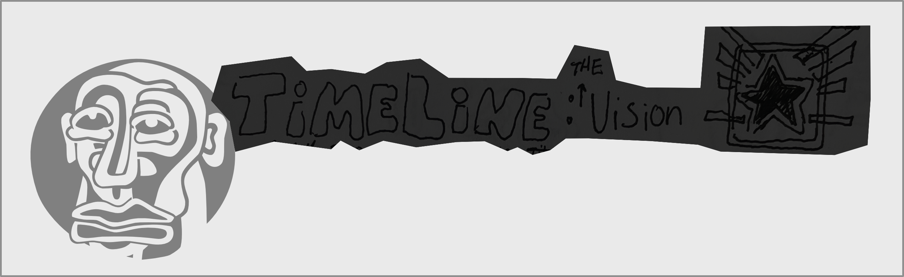
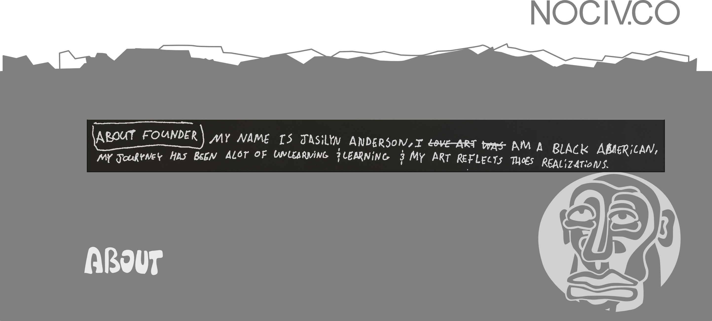

Nociv stands for Nothing of Civilization: a rejection of the performative and the artificial.
Civilization, as a word, tells a false story that we are separate from nature, when in truth there is no separation. The outdoors was never some far away place. We are always in it. Turning clay into a brick, and that brick into a house, doesn't change where it came from. It's still earth.
That is the Nociv mindset: rejecting artificial structures and getting back to what is raw, functional, and real.
The Creator's Dilemma: seeing what something could be, before it exists, and not being able to unsee it.

Pick a track to see where it's headed.
Phase 1 — pop-up shops only, all around Arizona. Second hand + upcycled, 1-of-1 pieces.
Phase 2 — adding original designs to wholesale blanks. Opening up on Vinted to reach other states.
Phase 3 — create, cut, and sew garments. Garments in local shops.
Phase 4 — pop-up shops in different states. Garments in select stores throughout the USA.
Find a USA manufacturer, or create one. Retire the Vinted store — selling only in person.
"We should own what we buy, even if that means creating it."
Creation is the betterment of humanity — reclaiming narratives, creating new norms. Bringing back in-person connection, word of mouth being the only way the movement spreads. Envisioning and sharing creations to inspire that change is obtainable, in multiple disciplines at once. You are, we are, I am, a creator. So let's put act behind what matters to us.

NoCiv isn't just a brand. It's a movement.
The way of life is a circle, but we live in a square society. We are limitless, and we have the power to make real change in the world. All we have to do is create it.